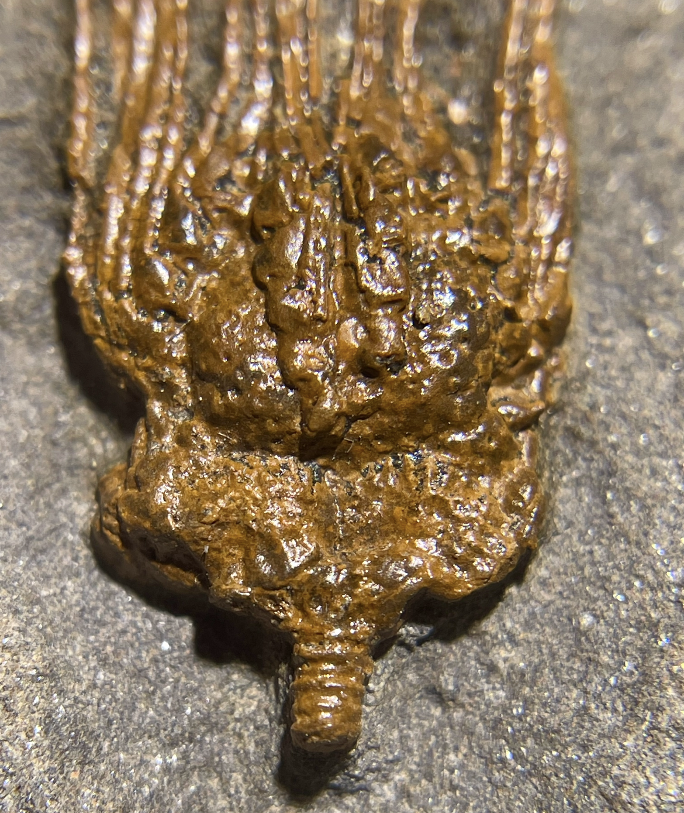
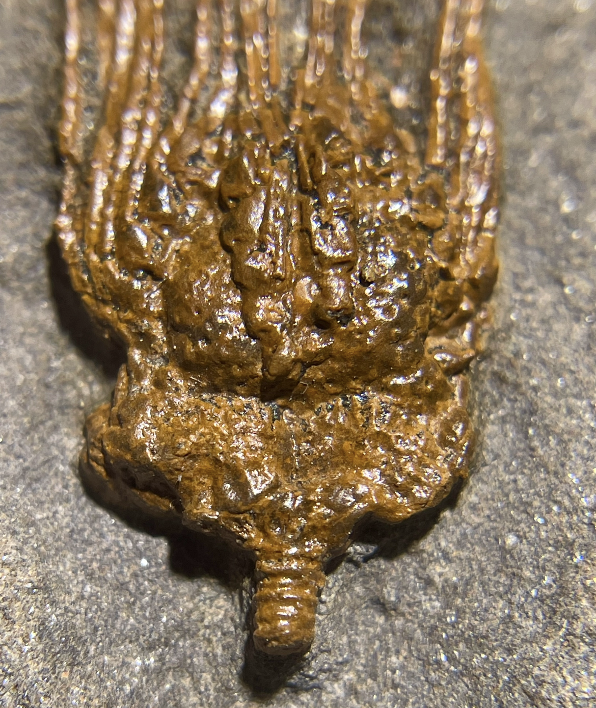

Blastozoan
indet.
• Ordovician
• Tiouririne Formation
• Isthlou, near Erfoud, Erracidia Province, Morocco, Africa
Size: 1.3 cm theca
A very unusual echinoderm that Forest Gahn has identified as some sort of Blastozoan (blastoids, cystoids, eocrinoids, paracrinoids etc.). The narrow ambulacral grooves lined with series of brachioles are reminiscent of rhombiferan cystoids such as Glyptocystites, but the brachioles themselves are extraordinarily long with tall, slender "stick-like" components.
 
